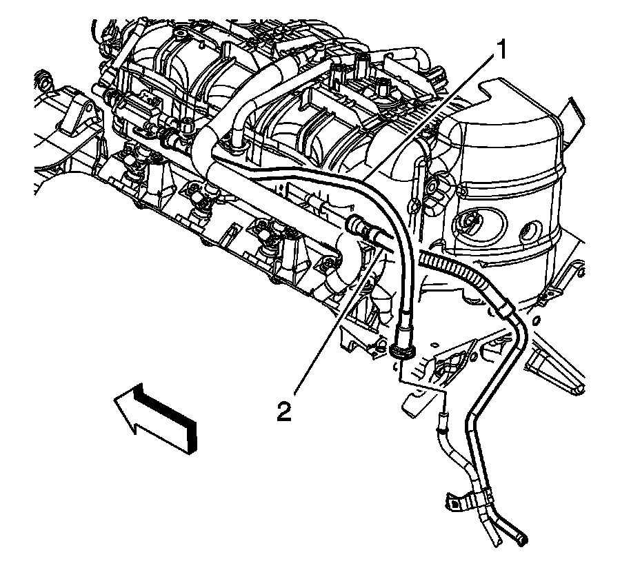

Fuel Hose/Pipes Replacement - Chassis (1500 Series)
FUEL HOSE/PIPES REPLACEMENT - CHASSIS (1500 SERIES)
REMOVAL PROCEDURE
IMPORTANT: Clean all fuel and evaporative emission (EVAP) lines connections and surrounding areas prior to disconnecting the lines in order to avoid possible fuel and/or EVAP system contamination.

1. Relieve the fuel system pressure. Refer to the Fuel Pressure Relief.
2. Disconnect the engine evaporative emission (EVAP) line (1) quick connect fitting from the chassis EVAP line.
3. Disconnect the fuel feed line quick connect fitting (2) from the fuel rail.
4. Cap the fuel rail and EVAP pipes.
5. Raise and support the vehicle. Refer to Vehicle Lifting.
6. Unbolt and reposition the front propeller shaft. Refer to Front Propeller Shaft Replacement.

7. Remove the fuel pipe bracket nut from the bellhousing stud.
8. Remove the fuel line clip from the bracket on the automatic transmission.
9. If equipped with 4-wheel drive (4WD), remove the fuel hose/pipe clip from the bracket on the transfer case.

10. Remove the fuel line bracket bolt (3).
11. Disconnect the chassis EVAP line quick connect fitting (4) from the fuel tank line.
12. Disconnect the fuel tank fuel feed line quick connect fitting (5) from the chassis line.
13. Cap the fuel and EVAP lines in order to prevent possible fuel and/or EVAP system contamination.
14. Remove the fuel/EVAP line clips from the frame and crossmember.
15. Remove the fuel line bracket locator tab from the frame.
16. Remove the fuel/EVAP lines from the vehicle.
INSTALLATION PROCEDURE
1. Install the fuel/EVAP lines to the vehicle.
2. Install the fuel line bracket locator tab to the frame.
3. Install the fuel/EVAP line clips to the frame and crossmember.
4. NOTE: Refer to Fastener Notice.
Install the fuel line bracket bolt (3).
Tighten the bolt to 12 N.m (106 lb in).
5. Remove the caps from the fuel and EVAP lines.
6. Connect the chassis EVAP line quick connect fitting (4) to the fuel tank line.
7. Connect the fuel tank fuel feed line quick connect fitting (5) to the chassis line.
8. If equipped with 4WD, install the fuel hose/pipe clip to the bracket on the transfer case.
9. Install the fuel line clip to the bracket on the automatic transmission.
10. Install the fuel pipe bracket nut to the bellhousing stud.
Tighten the nut to 20 N.m (15 lb ft).
11. Position and install the front propeller shaft. Refer to Front Propeller Shaft Replacement.
12. Lower the vehicle.
13. Remove the caps from the fuel rail and EVAP line.
14. Disconnect the engine evaporative emission (EVAP) line (1) quick connect fitting from the chassis EVAP line.
15. Disconnect the fuel feed line quick connect fitting (2) from the fuel rail.
16. Install the fuel fill cap.
17. Connect the negative battery cable.
18. Use the following procedure in order to inspect for leaks:
1. Turn the ignition ON, with the engine OFF, for 2 seconds.
2. Turn the ignition OFF for 10 seconds.
3. Turn the ignition ON, with the engine OFF.
4. Inspect for fuel leaks.
19. Install the intake manifold sight shield.